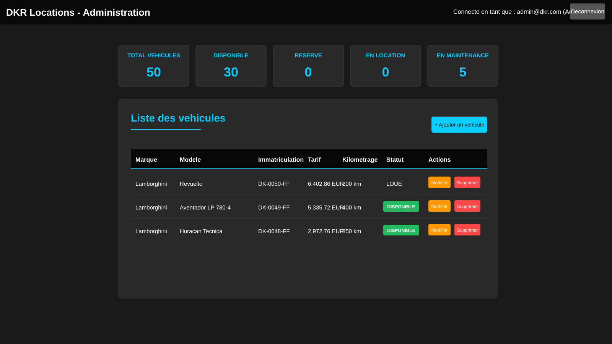
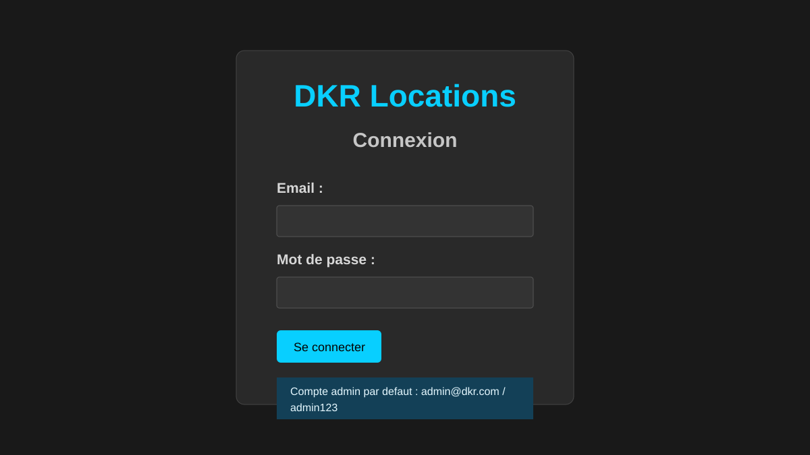
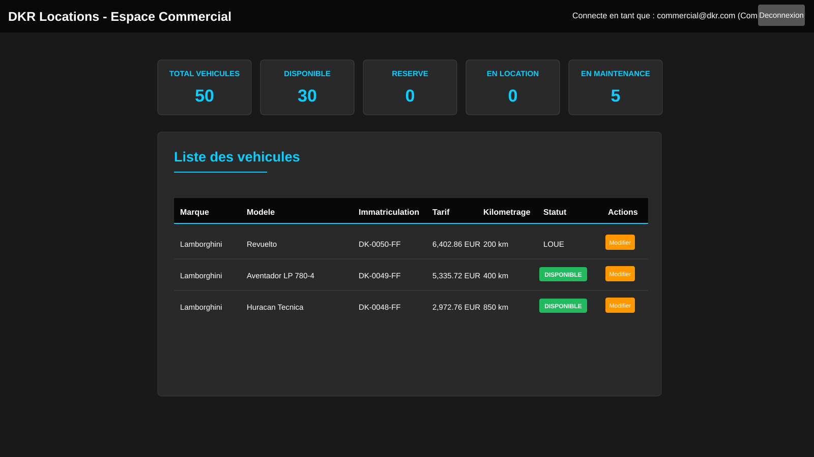

Objectif
Poursuivre mes etudes en alternance et evoluer vers un profil de developpeur polyvalent.
B I E N V E N U E S U R M O N P O R T F O L I O
Etudiant en BTS SIO - option SLAM
Developpement d'applications web
Actuellement en BTS SIO option SLAM, je developpe des applications web en HTML, CSS et JavaScript. Ce portfolio presente les projets realises dans le cadre de ma formation et en autonomie.
Poursuivre mes etudes en alternance et evoluer vers un profil de developpeur polyvalent.
Projets concrets, bonne structuration technique, GitHub, documentation et progression continue.
Option SLAM orientee developpement d'applications.
Creation d'interfaces responsive et de fonctionnalites dynamiques.
Organisation, documentation et amelioration progressive du code.
Les competences que j'utilise principalement dans mes projets web.
Mes projets montrent ma progression en developpement web, depuis la creation d'interfaces jusqu'a la mise en place de fonctionnalites dynamiques et de traitements de donnees. Chaque projet est documente avec son contexte, ses objectifs, les competences travaillees et les pistes d'amelioration.
Contexte : Site vitrine realise pour le snack familial afin de presenter l'activite, la carte, les horaires et les informations de contact.
Description : Interface responsive pour un snack a Carros avec menu filtre par categorie, mise en avant des burgers, tacos, tajines, couscous, desserts et boissons.
Competences developpees : integration web, responsive design, JavaScript cote client, organisation d'un site vitrine et prise en compte d'un besoin utilisateur.
Ameliorations possibles : ajouter un vrai systeme de commande, une carte interactive et une gestion plus avancee des demandes client.
Contexte : Application de gestion de location de vehicules realisee dans le cadre d'un projet de developpement web.
Description : Application PHP/MySQL avec authentification, roles utilisateurs et gestion d'un parc de vehicules selon le profil connecte.



Competences developpees : PHP, MySQL, sessions, roles utilisateurs, architecture MVC simple, CRUD et organisation d'une application metier.
Ameliorations possibles : finaliser l'espace client, ajouter la reservation en ligne, renforcer le hashage des mots de passe et completer les tests.
Contexte : Site personnel permettant de presenter mon profil BTS SIO SLAM, mes projets, mes stages, ma veille, mon CV et ma grille E5.
Role : ce portfolio sert de support de presentation. Il n'est pas mon projet principal, mais il montre ma capacite a organiser et publier mon travail.
Voir le code sur GitHubDeux experiences chez Ciffreo Bona qui m'ont permis de decouvrir un service informatique et de mieux comprendre les besoins metier en entreprise.
12 janvier 2026 au 13 fevrier 2026
Mai 2025 a Juin 2025
Sujet suivi : les systemes legacy, comme l'AS/400, et leur modernisation en entreprise.
Problematique : comment faire evoluer un ancien systeme informatique sans perturber l'activite de l'entreprise ?
J'ai choisi ce sujet car certaines entreprises utilisent encore des systemes anciens comme l'AS/400. Lors de mon stage chez Ciffreo Bona, j'ai pu comprendre que ces outils restent importants car ils sont stables, fiables et lies au fonctionnement quotidien de l'entreprise.
De nombreuses entreprises gardent des systemes anciens car ils gerent des donnees ou des processus essentiels.
Les entreprises ajoutent des interfaces web, des API ou des passerelles sans tout remplacer d'un coup.
Un systeme legacy peut etre relie a des applications web, au cloud ou a des bases de donnees plus recentes.
Cette veille m'a permis de comprendre qu'une technologie ancienne n'est pas forcement depassee. Dans une entreprise, un systeme stable peut rester essentiel. L'enjeu est donc souvent de le faire evoluer progressivement plutot que de le remplacer brutalement.
Cette section regroupe mon tableau de synthese E5 pour le BTS SIO. Il permet de presenter les situations professionnelles, les competences travaillees et les productions associees a mon parcours.
Le tableau de synthese sert de support pour l'epreuve E5. Il met en relation les projets, les stages et les competences du referentiel BTS SIO option SLAM.
Un echange, une opportunite ou une question ? Ecrivez-moi.